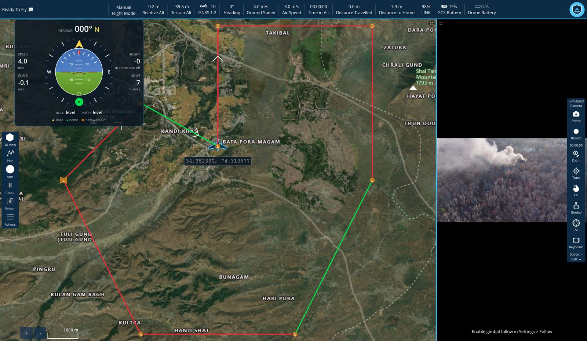
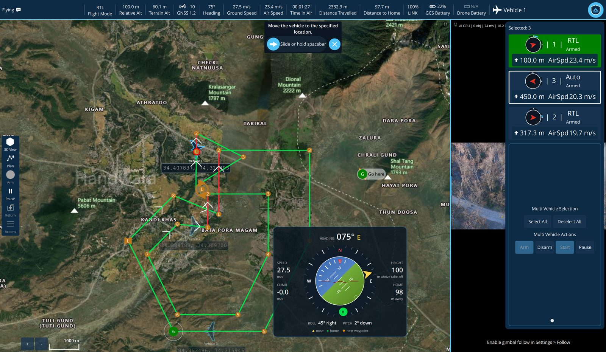
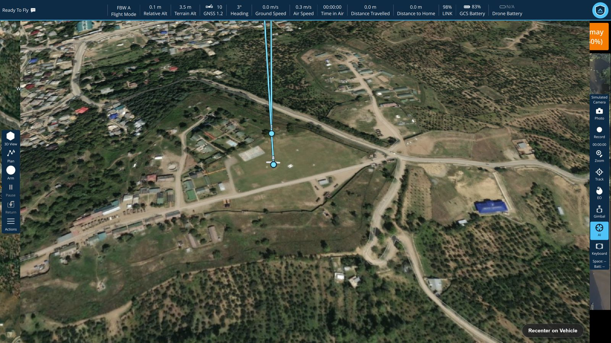
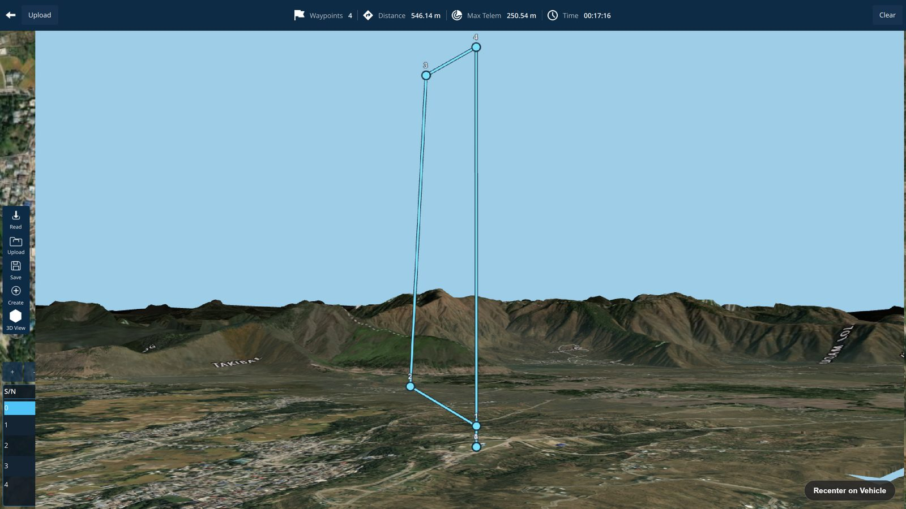
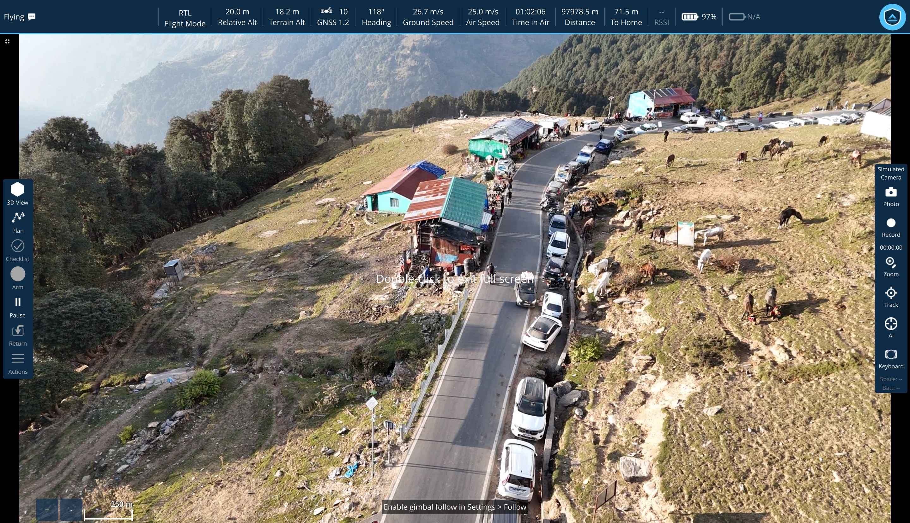
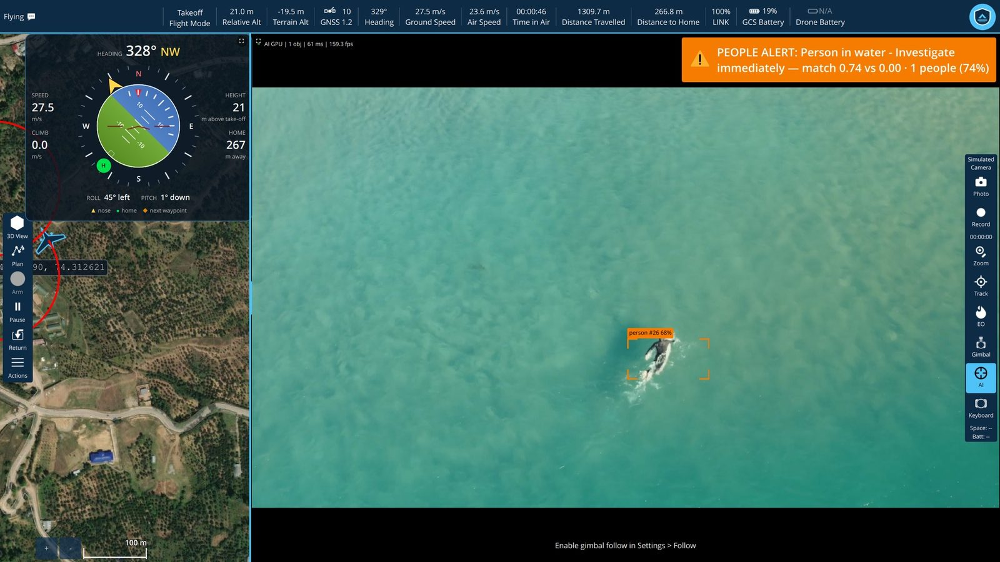
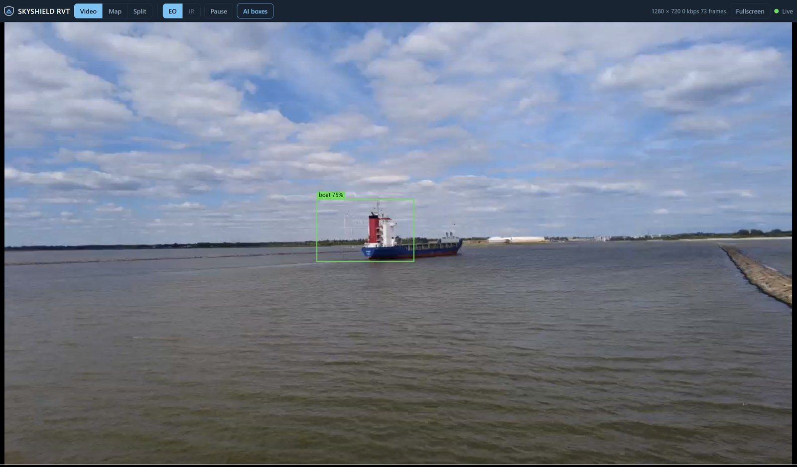

02 — The ground station
Controls sit where you expect them, the video carries nothing you did not ask for, and the planner checks the route against the ground before the aircraft ever leaves it.


Fly View — split map and live feed.


Several aircraft — three on missions from one station, each with its own camera.

Plan View — mission and editable item table.



3D View — the terrain check in flight, the live aircraft, and a plan previewed before take-off.

Video window — the feed, and nothing else.


Two flood rescues — people cut off on a roof, a person in the water — read and raised automatically.

Remote Video Terminal — the same feed in a browser, with nothing installed.
Everything in the station
A ground station is judged on the bad days — a sensor that will not calibrate, a link that drops, a log that has to come off the aircraft after an incident.
Download
One installer with everything the station needs, video and the 3D view included. Nothing else to set up. The AI detection features unlock with a licence key. From this version on SkyShield keeps itself up to date.
Windows 10 or 11, 64-bit. If Windows shows “Windows protected your PC”, choose More info then Run anyway.
SHA-256 8C0D12D6BD3C34D1508AFA2DA7866E2D56948B93DC6818E5AFC144ABECB0DEDE